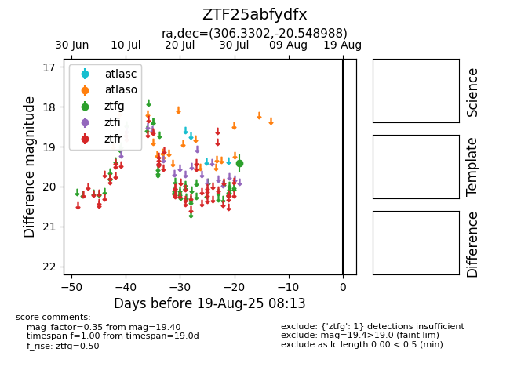

Target ZTF25abfydfx at 2025-08-19 09:59, see:
FINK: fink-portal.org/ZTF25abfydfx
Lasair: lasair-ztf.lsst.ac.uk/objects/ZTF25abfydfx
ALeRCE: alerce.online/object/ZTF25abfydfx
alt names
ZTF25abfydfx (ztf,fink)
coordinates:
equatorial (ra, dec) = (306.3302,-20.54899)
galactic (l, b) = (23.5223,-29.46986)
photometry
last ztfg=19.40
1 ztfg detections
